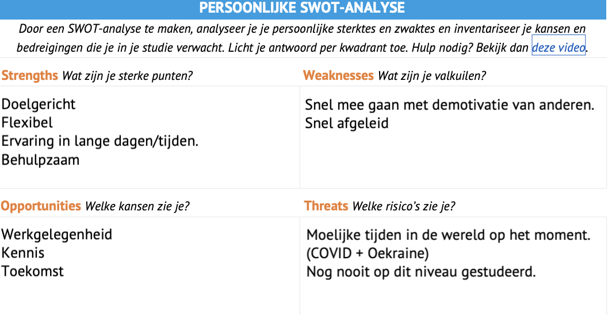

My Personal SWOT
This is my personal SWOT!
As you can see I think that my strengths are that I am Purpose driven and very felixble and helpfull.
I think my weakness is that I am quickly distracted and demotivated by other people.
I hope in the future that I can get a good job with this education and a lot of knowledge.
If COVID is not in the way ofcourse!